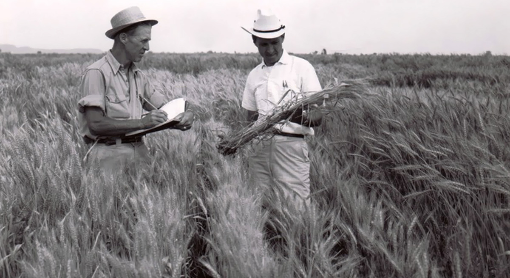

Norman Borlaug

Dr. Norman Borlaug, third from the left, trains biologists in Mexico on how to increase wheat yields - part of his life-long war on hunger.
Here's a time line of Dr. Borlaug's life:
you should read more about this incredible human being on his
Wikipedia entry